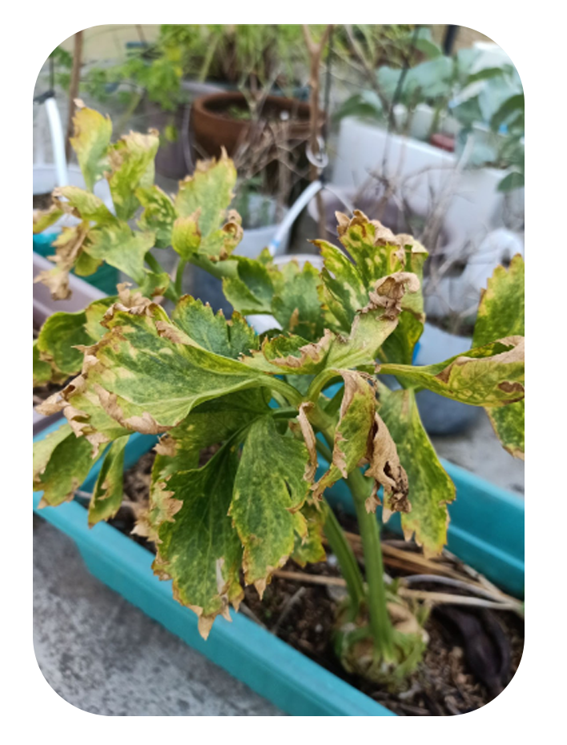

Plant Systematics |
||
|---|---|---|
|  |

|
|
COMPLETE DESCRIPTIONS
Celery
Apium graveolens L., commonly known as Celery, is a vegetable from the Family Apiaceae. It is an annual perennial plant that grows throughout Europe as well as the tropical and the subtropical regions of Asia and Africa and is cultivated worldwide. Celery has a complex structure containing stems, leaves, and thick roots. It is typically grown in nutritious soil that has been fertilized with compost and well-rotted manure. Moreover, it requires consistent moisture to grow ideally. Celery is often characterized with its erect biennial or perennial herb and the distinct smell of celery. Its height ranges up to 1 meter and above. The stem has prominent rather coarse grooves, rising from a large fleshy taproot. Celery has compound leaves, made up of two or more discrete leaflets. The lower leaves have a pinnate arrangement, usually 10-14 centimeters long with deltate-rhomboid segments scaling up to 4-5 cm. It is commonly used as an ingredient in human food and beverages. Furthermore, it is often utilized as an anthelmintic, antispasmodic, carminative, diuretic, laxative, and a sedative stimulant in traditional medicine
Mayana
Coleus blancoi Benth., commonly known as Mayana or Coleus, is a species of flowering plant belonging to the Family Lamiaceae. It is commonly found in areas with tropical climates, in which its native range is tropical and subtropical Asia to northern Australia. Mayana plants are usually grown for its leaves, not for the flowers. It thrives in rich, well-drained soil as well as in heat, the kind of environment that promotes rapid growth. The plant has a complex structure containing stems, leaves, and thick roots. It is a woody angiosperm with opposite compound leaves. Mayana or Coleus is usually characterized with its branched, fleshy, annual herb about 1 meter high. Both the stems and the flowers are purplish. The flowers are numerous and 15 to 30 centimeters long, borne in lax, terminal, simple, or branched inflorescences. The leaves, which is the most noticeable asset of Mayana, are variously blotched or colored; with the colors usually ranging from uniformly velvety-purple, yellow, pink, intense red, and luminous chartreuse. Moreover, its leaves are usually ovulate, rather coarsely toothed, more or less hairy, and are 5 to 10 centimeters long. Mayana or Coleus plants are generally used in folkloric medicine in which it is a natural analgesic, primarily used for pain, soreness, swelling, and cuts. It can also be an adjunct medication for delayed menstruation and diarrhea. However, for non medicinal purposes, it is typically displayed as an ornamental plant.
Oregano
Origanum vulgare L., commonly known as oregano belongs to the family ‘Lamiaceae’. It is a popular herb that has been naturalized in parts of the United States and Mexico and primarily grows to the hills of Mediterranean countries such as Greece, France, Egypt, Bosnia, and Albania. Oregano plant is best grown in a dry soil with a pH of 6.5 to 7.0 in a sunny garden bed or any container. At maturity, it typically grows 1 to 2 feet tall and 2 feet wide. The leaves of oregano are generally not stiff, usually broader, and with well-developed leaf blade, usually with a midvein and well-developed secondary and tertiary venation. In addition, its stamen is ascending and the woody angiosperms have opposite compound leaves. Like any other plant that has a medicinal value, oregano offers a lot of health benefits as per the fact that it has antibacterial effects, anti-cancer agent, and antioxidant properties. Moreover, oregano serves as a home remedy for many ailments, especially respiratory tract conditions like asthma, cough, and croup.
Tomato
Tomato (Solanum lycopersicum L.) is an economically important fruit crop that originated in Central America and western South America. It belongs to the Solanaceae family, also known as the potato or deadly nightshade family. In terms of its height, tomato typically grows 3 to 10 ft in height depending on the variety. It grow well in many types of soil although, a well-drained and fertile loam with a pH of 5.8 to 7.0 is the most suitable. The thickness of its stems, leaves, and roots are generally greater than 1, with vascular tissue, reproducing by seeds or spores. Moreover, the leaves of a tomato is generally not stiff, usually broader and with well-developed leaf blades. In regard to its nutritional facts and health benefits, tomatoes are scientifically proven to reduce fine lines, wrinkles, and age spots as per the fact that this fruit crop contains anti-aging properties. Aside from its anti-aging properties, it also has antioxidant properties that helps people fight free radicals in the body and has the ability to protect people against cancer and any other conditions.
Alugbati
Alugbati or Malabar Spinach (Basella alba L.) is an edible perennial vine that belongs to the Family Basellaceae. It is often found in tropical Asia, Africa, and Malaya, where it is largely cultivated as a vegetable. The plant is also native to the Indian subcontinent, Southeast Asia, and New Guinea. The ideal environment for the growth of alugbati is in soils high in organic matter. Moreover, the soil must be retained moist and loamy in order to produce the best state of alugbati. Alugbati is generally a smooth, twining herbaceous vine that can grow up to several meters in length. It is often characterized by its purplish or green stems as well as its somewhat fleshy leaves. The leaves are commonly mucilaginous, ovate or heart-shaped, 5 to 12 centimeters long, stalked, and are tapering to a pointed tip with a cordate base. Furthermore, its spikes are axillary and solitary, going up to 5 to 29 centimeters in length. Alugbati commonly serves as an ingredient in different cuisines. It also serves medicinal properties, where it improves testosterone levels in males. It can also be a safe laxative for pregnant women and children, where decoction of leaves is recommended. For external uses, the mucilaginous leaves of alugbati may be crushed and applied in urticaria, burns, and scalds.
Characteristics |
|
|---|---|
A
Plant more complex, with stems, leaves, and roots generally > 1
cell thick, with vascular tissue, reproducing by seeds or spores
(+), Plant lacks complexity (-)
|
B
Plant terrestrial, wetland, or aquatic, normally rooted to the
substrate (+), Plant is not terrestrial, wetland, or aquatic,
not normally rooted to the substrate (-)
|
C
Plants woody, either trees, shrubs, lianas, subshrubs, or
rosette shrubs, with perennating structures borne on long-lived,
above-ground, woody stems or caudices (+), Plant is not woody,
lacks perennating structure borne on long-lived, above-ground,
woody stems or caudices (-)
|
D
Plants herbaceous, herbs, or herbaceous vines, annual, biennial,
or perennial, if the latter, with perennating structures borne
below-ground as crowns, offsets, etc., or as buds on woody
rhizomes (+), Plant is not herbaceous (-)
|
E
Leaves generally not stiff, usually broader and with
well-developed leaf blades, usually with a midvein and well
developed secondary and tertiary venation (+), Leaves generally
stiff, narrow without well-developed leaf blades, lacks a
midvein and no well-developed secondary and tertiary venation
(-)
|
F
Woody angiosperms with opposite, compound leaves (+), Non-woody
angiosperms, compound leaves not opposite (-)
|
GStamen ascending (+), Stamen not ascending (-) |